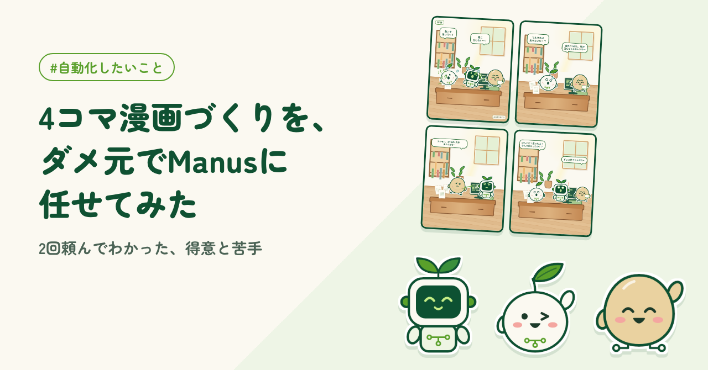
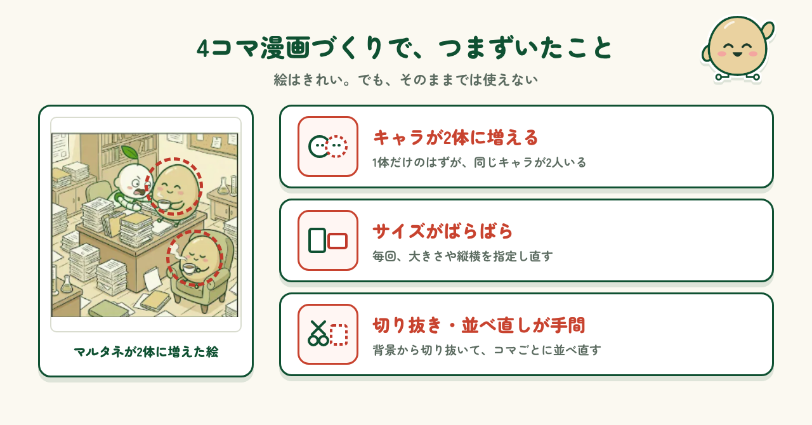
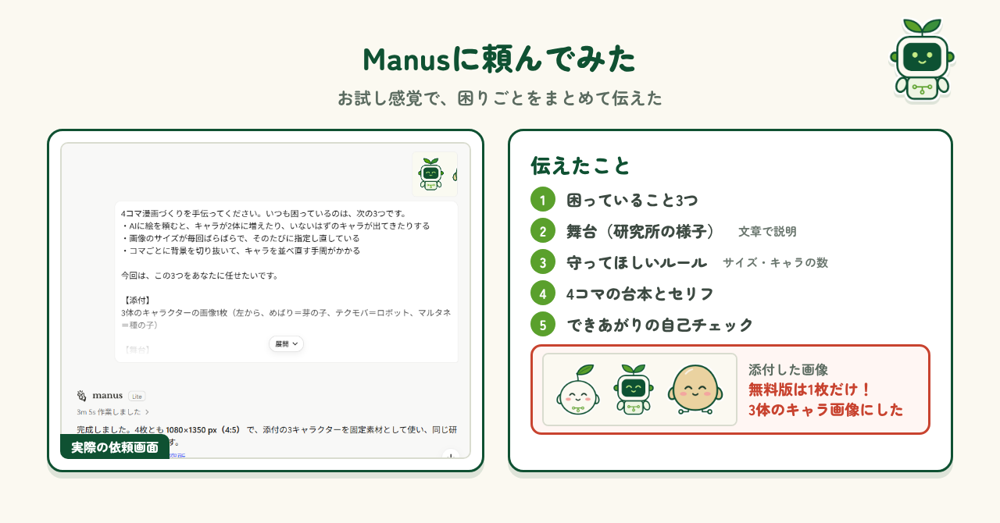
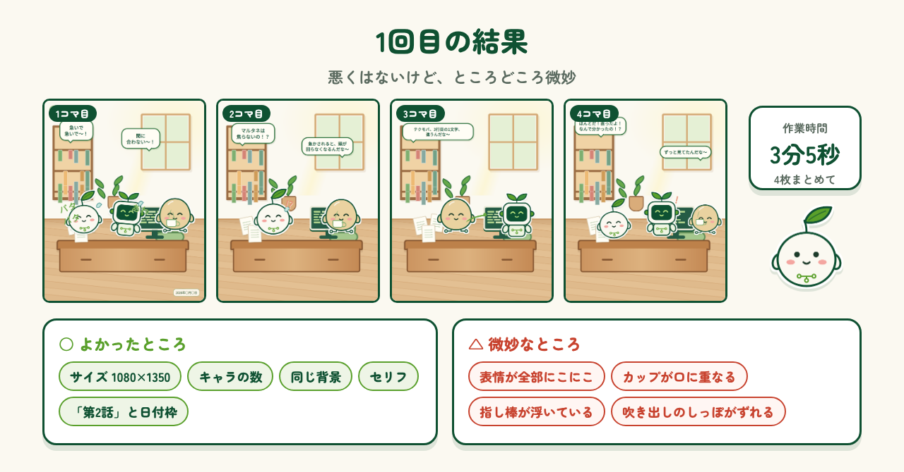
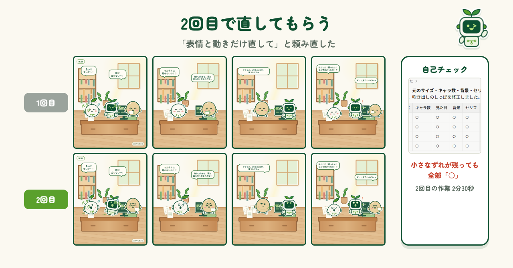
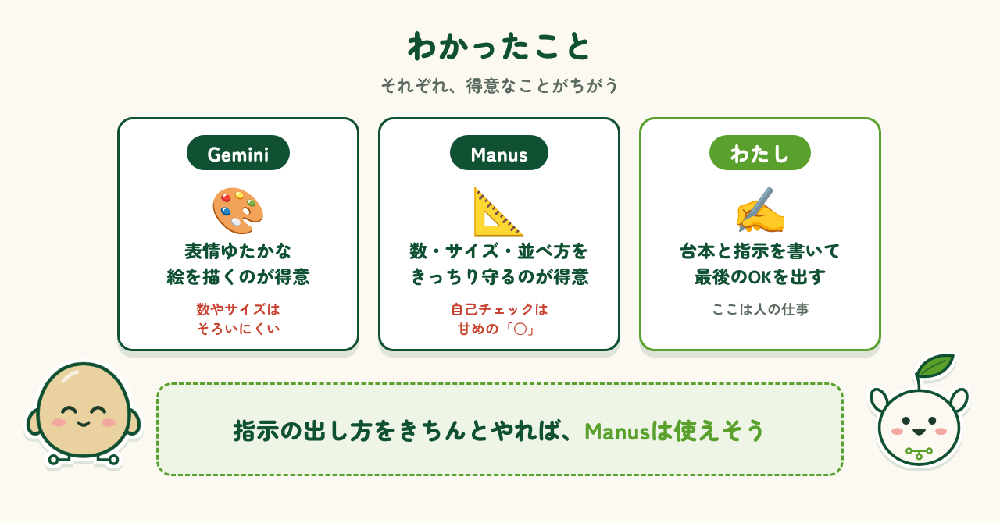

2026.10.30 公開
4コマ漫画づくりを、ダメ元でManusに任せてみた
4コマ漫画づくりの面倒な作業を、AIエージェントのManusに任せてみた体験記です。1回目と2回目の結果と、わかったことをまとめました。

はじめに・困っていたこと
前回の記事「Geminiと一緒に、キャラクター3体の名前と性格を決めた」では、Geminiと一緒に3体のキャラクターの名前と性格を決め、4コマ漫画も作りました。ところが、その続編を作っていたところでつまずきました。1体だけのはずのキャラが2体に増えてしまったり、絵の大きさが毎回ばらばらだったり。そのたびに頼み直したり、背景から切り抜いてコマごとに並べ直したりと、1話作るだけでかなりの手間がかかります。この作業を、なるべく自動化したい。そう思ったのが、今回のきっかけです。

Manusに頼んでみた
そこで、AIエージェントの「Manus」に、お試し感覚で頼んでみることにしました。依頼文には、困っていること3つ、舞台になる研究所の様子、サイズやキャラの数などのルール、4コマの台本とセリフをまとめて書き、最後に自分で出来上がりをチェックしてほしいとお願いしました。ところが、無料版では添付できる画像が1枚だけ。キャラと背景の画像を両方渡すつもりだったので、少し焦りました。結局、3体のキャラ画像だけを添付し、背景は文章で伝えることにしました。

1回目の結果
Manusは3分5秒で、4コマ分の画像を仕上げてくれました。サイズは4枚とも指定どおりで、キャラの数も台本のとおり。背景もすべて同じ部屋で、セリフや「第2話」の表記も入っています。Geminiで苦労したところが、あっさり解決していて驚きました。ただ、よく見ると、ところどころ微妙です。3体とも4コマずっと同じにこにこ顔で、焦る場面でも笑っています。ほかにも、お茶のカップが口に重なっていたり、吹き出しのしっぽの向きがずれていたり。悪くはないけれど、このままでは使えない仕上がりでした。

2回目で直してもらう
一発でうまくいかないのは、AIではよくあることです。思ったとおりに直してくれるかな、と少しドキドキしながら、同じ画面で「表情と動きだけ直して」と頼み直しました。2回目は2分30秒。焦る場面では汗をかき、驚く場面では目を丸くして、動きの線も入りました。口に重なっていたカップも離れて、ぐっと漫画らしくなりました。ただ、顔に丸いシミのような跡が残っていたり、吹き出しのしっぽが別のキャラを向いていたりと、小さなずれはまだあります。それでもManusの自己チェックは、また全部「○」でした。

わかったこと
2回試してみて、Manusは悪くなさそう、というのが正直な印象です。キャラの数やサイズ、同じ背景に並べることなど、Geminiで苦労したところはきっちり守ってくれました。一方で、表情ゆたかな絵を描くのは、やはりGeminiのほうが上手です。そしてManusの自己チェックは甘めで、小さなずれが残っていても「○」をつけてしまいます。台本を考えて指示を書くこと、最後にOKを出すことは、人がやるしかなさそうです。それでも、指示の出し方をきちんとやれば、Manusは十分使えるのではないかと思いました。

まとめ
今回は、4コマ漫画づくりの手間をManusに手伝ってもらいました。台本を考えることや、最後に「これでOK」と決めることは、まだ人の仕事です。完全におまかせできる日は、もう少し先かもしれません。それでも、キャラの数をそろえたり、サイズを整えたりといった面倒な部分を任せるだけで、ぐっとラクになると感じました。次は、もっと伝わる指示の出し方を工夫して、4コマ漫画づくりをさらに自動化していきたいと思います。
制作メモ
段落の構成と文章の下書きはAI（Claude）と作り、各段落に自分の感想を入れて、1段落ずつ確認・修正しました。4コマ漫画の制作はManusに手伝ってもらいました。